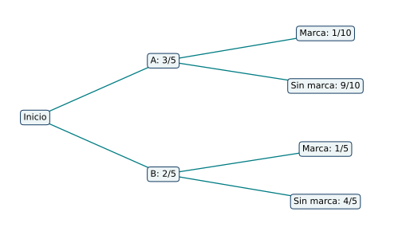
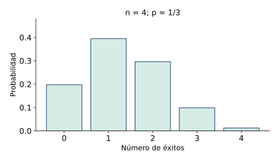
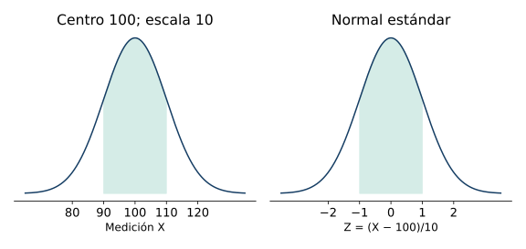
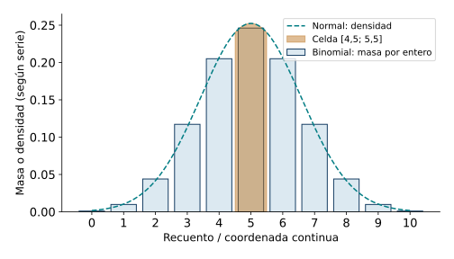

Probabilidad, condiciones y distribuciones elementales
← Combinatoria, muestreo y descripción de datos · Índice del libro · Siguiente →
Una caja contiene fichas rojas y azules. Extraemos dos y queremos saber cuán probable es obtener dos rojas. La respuesta cambia si devolvemos la primera ficha antes de sacar la segunda. También cambia si recibimos una información nueva: por ejemplo, que al menos una de las fichas extraídas es roja. Las cuentas requieren describir el experimento, conservar su orden y precisar qué información está disponible.
La probabilidad construye modelos para cuantificar incertidumbre. Un modelo asigna pesos a los resultados posibles y permite calcular el peso de un conjunto de resultados. La observación aporta frecuencias que pueden orientar o contrastar esa asignación. El trabajo comienza al definir los casos y continúa al examinar cómo se relacionan los sucesos. Los ejemplos de este capítulo usan datos construidos para el estudio; cada supuesto de azar se declara dentro del problema.
Dar peso a los resultados posibles
El espacio muestral \(\Omega\) reúne los resultados completos del experimento considerado. Un suceso es un subconjunto de \(\Omega\). En un modelo finito, cada resultado \(\omega\) recibe un peso \(p_\omega\geq0\) y la suma de todos los pesos es uno. La probabilidad de un suceso \(A\) es
\[P(A)=\sum_{\omega\in A}p_\omega.\]
El peso uno corresponde al espacio completo y el peso cero al conjunto vacío. Si los \(N\geq1\) resultados tienen el mismo peso, cada uno vale \(1/N\) y \(P(A)=|A|/N\). La equiprobabilidad es una hipótesis del modelo; debe apoyarse en el mecanismo de selección o adoptarse expresamente para el estudio.
Una frecuencia relativa observada es el cociente entre el número de veces que ocurrió un suceso y el número de repeticiones realizadas. Es un resumen de datos. Una probabilidad teórica es un parámetro del modelo. Repetir el experimento permite comparar ambos, con variaciones muestrales y condiciones de observación que deben estudiarse antes de sacar conclusiones.
Propiedades del modelo finito
| Propiedad | Hipótesis y alcance |
|---|---|
| Normalización | \(p_\omega\geq0\), \(\sum_{\omega\in\Omega}p_\omega=1\) y \(P(\Omega)=1\). |
| Suceso y cota | \(P(A)=\sum_{\omega\in A}p_\omega\) y \(0\leq P(A)\leq1\). |
| Casos equiprobables | Si todos los \(N\) resultados tienen igual peso, \(P(A)=\lvert A\rvert /N\). |
| Inclusión | Si \(A\subseteq B\), entonces \(P(A)\leq P(B)\). |
Pruebas. Véase «Pesos y sucesos en espacios finitos» en el apéndice de demostraciones.
Problema 1. Dos giros con resultados ordenados
Se gira dos veces una ruleta con sectores A, B y C. Construir el espacio de resultados y el suceso «aparece exactamente una A». Calcular su probabilidad si los nueve pares ordenados son equiprobables.
Solución. El espacio es \(\{AA,AB,AC,BA,BB,BC,CA,CB,CC\}\). Cada par indica primero el resultado del primer giro y después el del segundo. El suceso pedido es \(\{AB,AC,BA,CA\}\) y tiene cuatro de los nueve casos, así que su probabilidad es \(4/9\). La cuenta usa la equiprobabilidad conjunta declarada. Una ruleta con sectores de tamaños distintos requeriría asignar otros pesos a esos mismos resultados.
Problema 2. Una ruleta con pesos diferentes
Una ruleta tiene tres resultados A, B y C, con pesos \(1/2\), \(1/3\) y \(1/6\). Hallar la probabilidad de obtener A o C y compararla con contar simplemente dos de tres resultados.
Solución. Los pesos suman \(1/2+1/3+1/6=1\). El suceso \(\{A,C\}\) tiene probabilidad \(1/2+1/6=2/3\). En este caso coincide con \(2/3\) obtenido al contar dos resultados, pero la coincidencia es particular: para \(\{A,B\}\), la suma de pesos es \(5/6\), aunque también contiene dos resultados. El procedimiento general suma los pesos asignados; el cociente de recuentos exige equiprobabilidad.
Problema 3. Frecuencia observada y modelo
En cuarenta giros se observó A diecisiete veces. Se propone para A una probabilidad de \(1/2\). Calcular la frecuencia relativa y explicar qué permite concluir esa diferencia.
Solución. La frecuencia observada es \(17/40=0{,}425\). Difiere de \(1/2\) en \(-3/40=-0{,}075\). El dato describe estas cuarenta observaciones y el parámetro propuesto describe el modelo. Una muestra finita puede dar una frecuencia distinta del parámetro aun cuando el modelo sea adecuado. Para valorar la diferencia haría falta un criterio de contraste y examinar las condiciones de repetición. La igualdad entre una frecuencia particular y el parámetro no forma parte de la definición del modelo.
Reunir sucesos y conservar las intersecciones
La unión \(A\cup B\) reúne los resultados que pertenecen a A, a B o a ambos. La intersección \(A\cap B\) reúne los que cumplen las dos condiciones. El complemento \(A^c\) contiene los resultados del espacio que quedan fuera de A. Dos sucesos son mutuamente excluyentes cuando su intersección es vacía.
Al sumar \(P(A)+P(B)\), los resultados de la intersección se cuentan dos veces. Restar una copia de \(P(A\cap B)\) da el peso de la unión. El complemento permite convertir «al menos uno» en el complemento de «ninguno», siempre que ambos sucesos se describan dentro del mismo espacio.
Propiedades de uniones y complementos
| Propiedad | Hipótesis y alcance |
|---|---|
| Complemento | \(P(A^c)=1-P(A)\). |
| Regla aditiva | \(P(A\cup B)=P(A)+P(B)-P(A\cap B)\). |
| Exclusión mutua | Si \(A\cap B=\varnothing\), \(P(A\cup B)=P(A)+P(B)\). |
| Diferencia | \(P(A\setminus B)=P(A)-P(A\cap B)\). |
Pruebas. Véase «Uniones, complementos y diferencias de sucesos» en el apéndice de demostraciones.
Problema 4. Dos condiciones sobre un dado
Se lanza un dado con seis caras equiprobables. Sean A «sale par» y B «sale mayor que tres». Hallar intersección, unión y sus probabilidades.
Solución. \(A=\{2,4,6\}\) y \(B=\{4,5,6\}\). La intersección es \(\{4,6\}\), de probabilidad \(2/6=1/3\). La unión es \(\{2,4,5,6\}\), de probabilidad \(4/6=2/3\). La regla aditiva lo comprueba: \(1/2+1/2-1/3=2/3\). El resultado dos pertenece sólo a A y el cinco sólo a B; cuatro y seis satisfacen ambas condiciones.
Problema 5. Al menos una aparición
Se lanza dos veces una moneda y los cuatro pares \(CC,CS,SC,SS\) son equiprobables. Hallar la probabilidad de al menos una cara.
Solución. El suceso complementario es obtener ninguna cara, que corresponde sólo a SS y tiene probabilidad \(1/4\). Por tanto la probabilidad pedida es \(1-1/4=3/4\). La enumeración directa da los tres pares \(CC,CS,SC\) y confirma el resultado. La expresión «al menos una» incluye el resultado con dos caras.
Problema 6. Separar participantes de dos actividades
En un grupo de 50 personas, 28 participan en A, 20 en B y 12 en ambas. Se elige una persona con igual probabilidad entre las cincuenta. Hallar la probabilidad de participar sólo en A, en alguna de las dos y en ninguna.
Solución. Sólo en A hay \(28-12=16\) personas, con probabilidad \(16/50=8/25\). La unión contiene \(28+20-12=36\), de probabilidad \(18/25\). Fuera de ambas quedan \(50-36=14\), de probabilidad \(7/25\). Las regiones «sólo A», «ambas», «sólo B» y «ninguna» tienen tamaños \(16,12,8,14\) y suman cincuenta.
Cambiar la base cuando llega información
Si recibimos la información de que ocurrió B, conservamos los resultados compatibles con ella. El peso total de esa nueva base es \(P(B)\); para volver a expresarlo como uno debemos dividir por esa misma cantidad. Los resultados favorables a A dentro de la base son los que cumplen ambas condiciones y tienen peso \(P(A\cap B)\). Cuando \(P(B)>0\), definimos por ello la probabilidad condicional mediante
\[P(A\mid B)=\frac{P(A\cap B)}{P(B)}.\]
La condición fija la nueva base y la intersección conserva los resultados favorables dentro de ella. Multiplicar por \(P(B)\) recupera la probabilidad conjunta. En una cadena de selecciones, esta regla permite actualizar las cantidades disponibles después de cada paso.
Podemos seguir un razonamiento parecido cuando el experimento comienza en una de varias clases. Una partición \(B_1,\ldots,B_r\) separa los resultados del espacio en clases disjuntas y exhaustivas. Si cada clase tiene probabilidad positiva, la parte de A que procede de \(B_j\) pesa \(P(B_j)P(A\mid B_j)\); sumar esas contribuciones da la probabilidad total de A. Para preguntar después qué clase produjo una observación de A, dividimos la contribución de esa clase por el peso total de A, suponiendo \(P(A)>0\). Ese cambio de base produce la fórmula de Bayes y permite reconocer por qué intervienen tanto el peso inicial de la clase como la probabilidad de la evidencia dentro de ella.

Propiedades de la condición
| Propiedad | Hipótesis y alcance |
|---|---|
| Base condicional | Si \(P(B)>0\), \(P(A\mid B)=P(A\cap B)/P(B)\). |
| Producto | Si \(P(B)>0\), \(P(A\cap B)=P(B)P(A\mid B)\); la forma inversa exige \(P(A)>0\). |
| Probabilidad total | Para una partición con \(P(B_j)>0\), \(P(A)=\sum_jP(B_j)P(A\mid B_j)\). |
| Bayes | Si además \(P(A)>0\), \(P(B_j\mid A)=P(B_j)P(A\mid B_j)/P(A)\). |
| Orden de condiciones | \(P(A\mid B)\) y \(P(B\mid A)\) usan bases distintas; cada cociente conserva su denominador. |
Pruebas. Véase «Condición, producto, probabilidad total y Bayes» en el apéndice de demostraciones.
Problema 7. Dos preguntas con bases distintas
En una población de 100 unidades, 40 pertenecen a B, 30 a A y 18 a ambas. Se elige una unidad uniformemente. Calcular \(P(A\mid B)\) y \(P(B\mid A)\).
Solución. La primera condición restringe la selección a las 40 unidades de B y deja 18 favorables: \(P(A\mid B)=18/40=9/20\). La segunda restringe a las 30 de A y conserva las mismas 18 de la intersección: \(P(B\mid A)=18/30=3/5\). Sus productos con las bases originales coinciden: \((40/100)(18/40)=(30/100)(18/30)=18/100\).
Problema 8. Dos extracciones sin devolución
Una urna contiene tres fichas rojas y dos azules. Se extraen dos fichas sucesivamente, con selección uniforme entre las disponibles y sin devolver la primera. Hallar la probabilidad de dos rojas.
Solución. La primera roja tiene probabilidad \(3/5\). Después de una roja quedan dos rojas entre cuatro fichas, así que la probabilidad condicional de otra roja es \(2/4\). El producto da \(P(RR)=(3/5)(2/4)=3/10\). Como comprobación por subconjuntos, hay \(\binom32=3\) parejas rojas entre \(\binom52=10\) parejas posibles equiprobables. La segunda etapa usa las cantidades actualizadas.
Problema 9. Reconstruir el origen de una pieza
Un sistema toma una pieza de la línea A con probabilidad \(3/5\) y de B con probabilidad \(2/5\). Las probabilidades de una marca son \(1/10\) en A y \(1/5\) en B. Hallar la probabilidad de marca y la probabilidad de origen B sabiendo que la pieza está marcada.
Solución. Las líneas forman una partición. La probabilidad total de marca M es \((3/5)(1/10)+(2/5)(1/5)=3/50+4/50=7/50\). La rama B y marca tiene probabilidad \(4/50\). Al condicionar en la marca, \(P(B\mid M)=(4/50)/(7/50)=4/7\). El hecho de que la marca sea más probable en B se combina con el peso inicial de ambas líneas; el posterior es la fracción de toda la evidencia que procede de B.
Problema 10. Una condición sobre dos monedas
Los pares \(CC,CS,SC,SS\) son equiprobables. Sabiendo que al menos una moneda muestra cara, hallar la probabilidad de dos caras. Comparar con saber que la primera muestra cara.
Solución. La primera información permite \(CC,CS,SC\), cada uno con el mismo peso original; sólo CC tiene dos caras y la probabilidad es \(1/3\). La segunda información permite \(CC,CS\) y produce probabilidad \(1/2\). Las frases definen sucesos condicionantes diferentes. Un procedimiento que eligiera una moneda para mostrarla añadiría un mecanismo de observación que habría que incluir en el espacio.
Independencia de sucesos
Dos sucesos A y B son independientes cuando \(P(A\cap B)=P(A)P(B)\). Si \(P(B)>0\), esta igualdad equivale a \(P(A\mid B)=P(A)\). La información de B conserva la probabilidad de A. La exclusión mutua expresa otra relación: exige que la intersección sea vacía. Cuando ambos sucesos tienen probabilidad positiva y son excluyentes, su probabilidad conjunta es cero y el producto de las marginales es positivo.
Para tres o más sucesos, la independencia mutua exige la igualdad entre probabilidad conjunta y producto para cada subfamilia. Comprobar sólo las parejas verifica independencia por pares, una condición que puede dejar pendiente la relación de los grupos mayores. En modelos de ensayos repetidos declararemos independencia mutua de los ensayos, junto a la probabilidad de cada resultado.
Propiedades de la independencia
| Propiedad | Hipótesis y alcance |
|---|---|
| Producto independiente | A y B son independientes si \(P(A\cap B)=P(A)P(B)\). |
| Conservación condicional | Si \(P(B)>0\), la independencia equivale a \(P(A\mid B)=P(A)\). |
| Complementos | La independencia de A y B implica la de \(A^c\) y B, de A y \(B^c\) y de ambos complementos. |
| Exclusión y producto | Sucesos excluyentes de probabilidades positivas tienen probabilidad conjunta cero y producto positivo. |
| Familia de ensayos | La independencia mutua exige el producto para todas las subfamilias; en un modelo producto, las cadenas completas tienen el producto de sus pesos. |
Pruebas. Véase «Independencia, exclusión y familias de ensayos» en el apéndice de demostraciones.
Problema 11. Dos relaciones dentro de un dado
En un dado equiprobable sean A «sale par», B «sale múltiplo de tres» y C «sale impar». Estudiar A con B y A con C.
Solución. \(P(A)=1/2\), \(P(B)=1/3\) y \(A\cap B=\{6\}\) tiene probabilidad \(1/6=(1/2)(1/3)\). A y B son independientes y pueden ocurrir juntos. En cambio, \(A\cap C=\varnothing\), con probabilidad cero, mientras que \(P(A)P(C)=1/4\). A y C son excluyentes y dependientes. Cada relación se comprueba con su propia condición.
Problema 12. Devolver la primera ficha
En la urna de tres rojas y dos azules se devuelve la primera ficha y se mezcla antes de extraer de nuevo. Se adopta independencia entre extracciones. Hallar la probabilidad de dos rojas y compararla con el problema 8.
Solución. Cada extracción tiene probabilidad roja \(3/5\). La independencia declarada da \(P(RR)=(3/5)^2=9/25\). Sin devolución era \(3/10\). La diferencia es \(9/25-3/10=3/50\). La devolución conserva la composición de la urna; la mezcla y la hipótesis de independencia forman parte del mecanismo modelado. Ambas condiciones deben describirse al usar el producto de marginales.
Problema 13. Parejas independientes y un grupo dependiente
Se consideran equiprobables los cuatro pares de bits \(00,01,10,11\). Sean A «el primer bit es 1», B «el segundo es 1» y C «los bits coinciden». Comprobar independencia por pares y estudiar los tres sucesos juntos.
Solución. Cada suceso contiene dos de los cuatro resultados y tiene probabilidad \(1/2\). Las intersecciones \(A\cap B\), \(A\cap C\) y \(B\cap C\) contienen sólo 11, por lo que valen \(1/4\) y satisfacen el producto de cada pareja. La intersección triple también contiene sólo 11 y vale \(1/4\), mientras que el producto de las tres marginales es \(1/8\). Se verifica independencia por pares y falla la independencia mutua. La comprobación del grupo aporta una condición adicional real.
Convertir resultados en una variable
Una variable aleatoria real X asigna un número a cada resultado \(\omega\) del espacio. Su distribución discreta reúne los valores que puede tomar y sus probabilidades, sumando los pesos de los resultados que producen el mismo valor. La esperanza es la media ponderada \(E(X)=\sum_x xP(X=x)\) en un modelo finito. Su interpretación es la de un promedio del modelo; puede ser fraccionaria aunque cada observación sea entera.
La varianza del modelo se define por \(\operatorname{Var}(X)=E((X-E(X))^2)\) y la desviación típica por su raíz no negativa. Las sumas finitas permiten demostrar linealidad de la esperanza sin exigir independencia. Para la varianza de una suma, la relación entre las variables añade un término que debe examinarse. Dos variables finitas X e Y son independientes cuando \(P(X=x,Y=y)=P(X=x)P(Y=y)\) para cada pareja de valores.
Propiedades de variables discretas
| Propiedad | Hipótesis y alcance |
|---|---|
| Distribución | \(P(X=x)\) suma los pesos de \(\{\omega:X(\omega)=x\}\); las probabilidades de valores distintos suman uno. |
| Esperanza lineal | Para variables finitas, \(E(aX+bY+c)=aE(X)+bE(Y)+c\). |
| Varianza | \(\operatorname{Var}(X)=E(X^2)-E(X)^2\geq0\). |
| Cambio afín | \(\operatorname{Var}(aX+b)=a^2\operatorname{Var}(X)\). |
| Suma independiente | Si X e Y son independientes, \(\operatorname{Var}(X+Y)=\operatorname{Var}(X)+\operatorname{Var}(Y)\). |
Pruebas. Véase «Distribuciones finitas, esperanza y varianza» en el apéndice de demostraciones.
Problema 14. Número de caras y distribución
En dos lanzamientos con pares equiprobables, sea X el número de caras. Construir su distribución y calcular esperanza y varianza.
Solución. SS produce X=0; CS y SC producen X=1; CC produce X=2. Las probabilidades son \(1/4,1/2,1/4\). La esperanza es \(0/4+1/2+2/4=1\). El segundo momento es \(0+1/2+4/4=3/2\), por lo que la varianza es \(3/2-1=1/2\). Dos resultados diferentes pueden producir el mismo valor de la variable, como muestran CS y SC.
Problema 15. Un pago aleatorio
Un juego paga 0 unidades con probabilidad \(1/2\), 4 con probabilidad \(1/3\) y 10 con probabilidad \(1/6\). Participar cuesta 3 unidades. Hallar la esperanza del pago y de la ganancia neta.
Solución. La esperanza del pago Y es \(0+4/3+10/6=3\). La ganancia neta es \(G=Y-3\), de esperanza \(E(G)=E(Y)-3=0\). Sus valores posibles son \(-3,1,7\), cuyas probabilidades conservan las del pago. La esperanza cero expresa un equilibrio promedio bajo el modelo y conserva la posibilidad de pérdidas y ganancias en cada participación.
Problema 16. Sumar variables dependientes
Sea X una variable que vale cero o uno con probabilidad \(1/2\) cada uno, e Y=\(1-X\). Hallar esperanzas y comparar la varianza de X+Y con la suma de varianzas.
Solución. Ambas variables tienen esperanza \(1/2\) y varianza \(1/2-(1/2)^2=1/4\). Su suma vale siempre uno, por lo que tiene esperanza uno y varianza cero. Las esperanzas se suman correctamente: \(1/2+1/2=1\). Las varianzas individuales suman \(1/2\), un valor distinto de cero. Aquí conocer X determina Y y las variables son dependientes. La condición de independencia en la propiedad de suma de varianzas tiene una función concreta.
Contar éxitos en ensayos independientes
Un ensayo de Bernoulli distingue éxito y fracaso, con probabilidades p y \(1-p\), donde \(0\leq p\leq1\). Los nombres designan las dos categorías elegidas para el modelo. Si se realizan n ensayos mutuamente independientes, con la misma probabilidad p, el número X de éxitos tiene distribución binomial:
\[P(X=k)=\binom nkp^k(1-p)^{n-k},\qquad k=0,\ldots,n.\]
Para \(0<p<1\), cada cadena concreta con k éxitos tiene peso \(p^k(1-p)^{n-k}\) y existen \(\binom nk\) cadenas de ese tipo. Si p=0, X vale cero con certeza; si p=1, X vale n. Para n=0 se toma X=0. Declarar estos casos extremos evita ambigüedades en productos con exponentes cero.
La esperanza es np y la varianza \(np(1-p)\). Estas fórmulas resultan de sumar indicadores de éxito y usar la independencia. Antes de aplicarlas a datos hay que evaluar si el número de ensayos es fijo, si cada ensayo tiene dos categorías, si la probabilidad se conserva y si el mecanismo sustenta la independencia.

Propiedades binomiales
| Propiedad | Hipótesis y alcance |
|---|---|
| Masa binomial | Para n entero no negativo, ensayos independientes y p constante, \(P(X=k)=\binom nkp^k(1-p)^{n-k}\) en \(0<p<1\). |
| Probabilidad total | La suma de las masas es \((p+1-p)^n=1\); los casos extremos se definen por sus valores ciertos. |
| Esperanza y varianza | \(E(X)=np\) y \(\operatorname{Var}(X)=np(1-p)\). |
| Al menos uno | Para \(n\geq1\), \(P(X\geq1)=1-(1-p)^n\), incluidos p=0 y p=1. |
Pruebas. Véase «Ensayos de Bernoulli y conteos binomiales» en el apéndice de demostraciones.
Problema 17. Exactamente dos éxitos
En cuatro ensayos independientes, cada uno con probabilidad de éxito \(1/3\), hallar la probabilidad de exactamente dos éxitos.
Solución. Una cadena específica con dos éxitos y dos fracasos tiene probabilidad \((1/3)^2(2/3)^2=4/81\). Hay \(\binom42=6\) posiciones posibles para los dos éxitos, y las cadenas son sucesos disjuntos. Por tanto, \(P(X=2)=6\cdot4/81=8/27\). La multiplicidad de cadenas explica el coeficiente combinatorio.
Problema 18. Complemento y momentos
En cinco ensayos independientes con p=\(1/5\), hallar la probabilidad de al menos un éxito, la esperanza y la varianza del recuento.
Solución. Ningún éxito tiene probabilidad \((4/5)^5=1024/3125\). El complemento da \(P(X\geq1)=2101/3125\). La esperanza es \(5/5=1\) y la varianza \(5(1/5)(4/5)=4/5\). La esperanza uno es un promedio del modelo; el mismo modelo asigna probabilidad positiva a otros recuentos, incluido cero.
Problema 19. Una selección que cambia la urna
De cinco fichas, dos rojas y tres azules, se extraen dos sin devolución, uniformemente entre las disponibles. Hallar la probabilidad de dos rojas y explicar qué ocurriría al usar una binomial con n=2 y p=\(2/5\).
Solución. La probabilidad real del experimento es \((2/5)(1/4)=1/10\). Una binomial daría \((2/5)^2=4/25\), correspondiente a dos ensayos independientes con probabilidad roja constante. En la extracción descrita, después de una roja la probabilidad roja baja a \(1/4\). La selección sin devolución se resuelve mediante condicionales o mediante \(\binom22/\binom52=1/10\). Comparar los mecanismos permite decidir qué distribución representa el recuento.
Problema 20. Un umbral de diseño
Una operación independiente tiene probabilidad de éxito \(1/2\) en cada intento. Hallar el menor número entero positivo n de intentos para que la probabilidad de al menos un éxito sea al menos \(31/32\).
Solución. Se requiere \(1-(1/2)^n\geq31/32\), equivalente a \((1/2)^n\leq1/32=2^{-5}\). Por monotonía de las potencias, esto exige \(n\geq5\). Para n=5 se obtiene exactamente \(31/32\); para n=4 la probabilidad es \(15/16=30/32\), menor que el umbral. Así se comprueban tanto la suficiencia como la minimalidad.
Leer áreas y cambiar de escala
En un modelo continuo con densidad, una curva no negativa distribuye probabilidad mediante áreas. El área total bajo la curva vale uno y el área entre a y b representa \(P(a\leq X\leq b)\). Para una densidad continua, un punto aislado tiene área cero. Una altura expresa probabilidad por unidad de la variable; para obtener una probabilidad se considera un intervalo y su área.
Introduciremos la normal estándar mediante la curva
\[\varphi(z)=c\,e^{-z^2/2},\]
donde c es la constante positiva que hace que su área total sea uno. La exponencial natural usa la base usual e; el apéndice construye el área finita del núcleo y fija c por normalización. Esta descripción permite desarrollar áreas y cambios de escala. El cálculo continuo de momentos y de constantes en forma cerrada corresponde al desarrollo analítico del cálculo.
La función acumulada \(\Phi(z)\) es el área a la izquierda de z. La simetría da \(\Phi(0)=1/2\) y \(\Phi(-z)=1-\Phi(z)\). Si Z sigue la normal estándar y \(X=\mu+\sigma Z\), con \(\sigma>0\), decimos que X sigue el modelo normal de centro \(\mu\) y escala \(\sigma\). Recuperar \(Z=(X-\mu)/\sigma\) transforma los límites de un intervalo. La densidad de X se obtiene comprimiendo verticalmente por \(1/\sigma\) para compensar el cambio horizontal y conservar áreas. En este anticipo, \(\sigma\) se utiliza como escala; los momentos continuos requieren la integración.
Usaremos los encierros numéricos \(0{,}8413<\Phi(1)<0{,}8414\) y \(0{,}9772<\Phi(2)<0{,}9773\), obtenidos mediante sumas de rectángulos con control de colas y redondeo, descritas en el apéndice. Sus puntos medios son aproximaciones con error menor que \(0{,}00005\). Las sumas y restas de aproximaciones conservan las correspondientes cotas de error.

Propiedades de áreas y estandarización
| Propiedad | Hipótesis y alcance |
|---|---|
| Área y acumulación | Para una densidad continua normalizada, \(P(a\leq X\leq b)\) es el área entre los límites y los puntos tienen probabilidad cero. |
| Simetría normal | \(\Phi(-z)=1-\Phi(z)\) y \(\Phi(0)=1/2\). |
| Cambio de escala | Para \(X=\mu+\sigma Z\), \(\sigma>0\), se usa \(Z=(X-\mu)/\sigma\). |
| Intervalo normal | Con \(a\leq b\), la probabilidad es \(\Phi((b-\mu)/\sigma)-\Phi((a-\mu)/\sigma)\). |
| Densidad transformada | \(f_X(x)=\varphi((x-\mu)/\sigma)/\sigma\) conserva el área total uno. |
Pruebas. Véase «Áreas normales y estandarización» en el apéndice de demostraciones.
Problema 21. Un intervalo de una escala a otra
Se adopta un modelo normal de centro 100 y escala 10 para una medición X. Hallar \(P(90\leq X\leq110)\) con los encierros dados.
Solución. Los límites estandarizados son \(-1\) y 1. La simetría da la probabilidad \(\Phi(1)-\Phi(-1)=2\Phi(1)-1\). Por tanto, está entre \(0{,}6826\) y \(0{,}6828\). El punto medio \(0{,}6827\) tiene error menor que \(0{,}0001\). Es una predicción del modelo adoptado; su uso para un instrumento concreto exige contrastar la forma de su distribución.
Problema 22. Una cola y una escala con unidades
Un tiempo T se modela mediante una normal de centro 50 segundos y escala 5 segundos. Hallar \(P(T>60)\) y explicar el significado de \(P(T=60)\).
Solución. El umbral estandarizado es \((60-50)/5=2\), una cantidad adimensional. La cola vale \(1-\Phi(2)\) y queda entre \(0{,}0227\) y \(0{,}0228\). La aproximación \(0{,}02275\) tiene error menor que \(0{,}00005\). En el modelo continuo, \(P(T=60)=0\) porque un punto tiene área cero. Una lectura instrumental redondeada a 60 segundos representa un intervalo de tiempos, como \([59{,}5,60{,}5)\) si se redondea al segundo, y su probabilidad se calcula con los dos límites. El modelo normal también asigna área a tiempos negativos; su adecuación depende de la escala y del fenómeno.
Problema 23. Una condición dentro de la normal
Para Z normal estándar, hallar \(P(0\leq Z\leq1\mid Z\geq0)\) con una cota de error.
Solución. La base \(Z\geq0\) tiene probabilidad \(1/2\). El suceso del numerador ya está contenido en ella y su probabilidad es \(\Phi(1)-1/2\). Al dividir, la condicional vale \(2\Phi(1)-1\), entre \(0{,}6826\) y \(0{,}6828\). Puede usarse \(0{,}6827\) con error menor que \(0{,}0001\). La condición conserva sólo la mitad derecha y renormaliza su área; la regla del cociente mantiene el mismo significado que en los modelos finitos.

Problema 24. Una aproximación continua a un recuento
Sea X binomial con n=10 y p=\(1/2\). Calcular exactamente \(P(X=5)\). Comparar con la aproximación por una normal Y de centro 5 y escala \(\sqrt{5/2}\) usando el intervalo \([4{,}5,5{,}5]\). Se da \(0{,}6240<\Phi(1/\sqrt{10})<0{,}6241\).
Solución. La probabilidad exacta es \(\binom{10}5/2^{10}=252/1024=63/256\). El intervalo continuo tiene límites estandarizados \(\pm(0{,}5/\sqrt{5/2})=\pm1/\sqrt{10}\). Su área queda entre \(0{,}2480\) y \(0{,}2482\), con punto medio \(0{,}2481\) y error de cálculo menor que \(0{,}0001\). La probabilidad binomial exacta es \(0{,}24609375\), de modo que el punto medio difiere de ella en \(0{,}00200625\). Esta diferencia corresponde a la aproximación entre modelos, además de la incertidumbre de cálculo del área. La corrección de continuidad asigna al entero cinco una celda de ancho uno; este ejemplo comprueba una aproximación concreta y conserva el cálculo exacto como referencia.
Ejercicios para trabajar sin profesor
En cada problema declare espacio, pesos y supuestos. En una condición, identifique la base y compruebe que su probabilidad sea positiva. En los modelos normal y binomial conserve las diferencias entre cálculo exacto, aproximación numérica y aproximación de un modelo por otro.
1. Se gira dos veces una ruleta con resultados A y B y los cuatro pares son equiprobables. Enumere el espacio y halle la probabilidad de exactamente una A.
2. Una ruleta asigna pesos \(1/2,1/4,1/4\) a A, B y C. Halle \(P(\{B,C\})\) y \(P(\{A,B\})\).
3. En cincuenta repeticiones ocurre un suceso veintidós veces. Calcule su frecuencia y su diferencia respecto de una probabilidad propuesta de \(2/5\). Explique el alcance de esa comparación.
4. En un dado equiprobable sean A «sale par» y B «sale al menos cuatro». Halle intersección y unión y sus probabilidades.
5. Tres monedas generan ocho cadenas equiprobables. Halle la probabilidad de al menos una cara por complemento y por recuento.
6. De 60 personas, 30 participan en A, 24 en B y 10 en ambas. Se elige una uniformemente. Halle probabilidades de sólo A, de la unión y de ninguna.
7. En 80 unidades hay 32 de B, 20 de A y 12 de ambas. Con elección uniforme calcule las dos probabilidades condicionales y la conjunta.
8. Una urna tiene cuatro rojas y dos azules. Se extraen dos sin devolución, uniformemente. Halle la probabilidad de dos rojas por etapas y por combinaciones.
9. Una pieza procede de A con probabilidad \(3/4\) y de B con \(1/4\). La marca tiene probabilidades \(1/5\) en A y \(2/5\) en B. Halle la probabilidad de marca y el posterior de B dada la marca.
10. En dos monedas con pares equiprobables, halle la probabilidad de dos caras dado que al menos una es cara. Compare con la condición de que la segunda sea cara.
11. En un dado equiprobable sean A «sale impar», B «sale múltiplo de tres» y C «sale par». Examine A con B y A con C.
12. En la urna de cuatro rojas y dos azules se devuelve y mezcla la primera ficha. Bajo independencia, halle la probabilidad de dos rojas y compárela con la extracción sin devolución.
13. En los cuatro pares de bits equiprobables, sean A «el primer bit es cero», B «el segundo es cero» y C «ambos coinciden». Examine parejas e intersección triple.
14. En tres monedas con ocho cadenas equiprobables, construya la distribución del número de caras, su esperanza y su varianza.
15. Un juego paga 0, 6 o 12 unidades con probabilidades \(1/2,1/3,1/6\). La entrada cuesta 4. Halle esperanza del pago y de la ganancia neta.
16. X vale cero o dos con igual probabilidad e Y=\(2-X\). Halle esperanzas y varianzas individuales y de la suma.
17. En cinco ensayos independientes con p=\(1/3\), halle la probabilidad de exactamente dos éxitos.
18. Para cuatro ensayos independientes con p=\(1/4\), halle la probabilidad de al menos uno, la esperanza y la varianza.
19. Entre seis fichas hay dos rojas. Se extraen dos sin devolución, uniformemente. Calcule la probabilidad de dos rojas y compárela con una binomial de n=2 y p=\(1/3\).
20. Con éxito independiente de probabilidad \(1/2\) en cada intento, halle el menor n positivo para que la probabilidad de al menos un éxito sea al menos \(63/64\).
21. Para un modelo normal de centro 20 y escala 4, acote \(P(12\leq X\leq28)\) y dé una aproximación con cota de error.
22. Un tiempo normal tiene centro 30 segundos y escala 3 segundos. Acote \(P(T>33)\) y explique la probabilidad de una lectura redondeada a 33 segundos.
23. Para Z normal estándar acote \(P(-1\leq Z\leq0\mid Z\leq0)\) e interprete la base.
24. Sea X binomial con n=8 y p=\(1/2\). Halle exactamente \(P(X=4)\) y compárela con la normal de centro 4 y escala \(\sqrt2\) sobre \([3{,}5,4{,}5]\). Use \(0{,}6381<\Phi(1/\sqrt8)<0{,}6382\) y separe las dos clases de aproximación.
Soluciones desarrolladas
Ejercicio 1. Pares completos
El espacio es \(\{AA,AB,BA,BB\}\). Exactamente una A corresponde a AB y BA. Al tener los cuatro resultados el mismo peso, la probabilidad es \(2/4=1/2\). El orden distingue los dos resultados favorables y la equiprobabilidad conjunta es un supuesto expreso.
Ejercicio 2. Sumar los pesos
Los tres pesos suman uno. Para \(\{B,C\}\), la probabilidad es \(1/4+1/4=1/2\). Para \(\{A,B\}\) es \(1/2+1/4=3/4\). Ambos conjuntos tienen dos elementos, pero sus pesos totales son diferentes. El cálculo usa la asignación del modelo para cada resultado.
Ejercicio 3. Un resumen de cincuenta datos
La frecuencia es \(22/50=11/25=0{,}44\). Su diferencia respecto de \(2/5=0{,}4\) es \(1/25=0{,}04\). La frecuencia corresponde a estas observaciones y la probabilidad propuesta al modelo. Evaluar el ajuste requiere conocer el mecanismo de repetición y un criterio que trate la variación de muestras finitas. La comparación numérica por sí sola registra esa diferencia.
Ejercicio 4. Contar el solapamiento
Los sucesos son \(A=\{2,4,6\}\) y \(B=\{4,5,6\}\). La intersección tiene dos elementos y probabilidad \(1/3\); la unión tiene cuatro y probabilidad \(2/3\). La igualdad \(1/2+1/2-1/3=2/3\) verifica la regla aditiva y corrige la doble cuenta de cuatro y seis.
Ejercicio 5. El único caso sin caras
La cadena SSS es el único resultado sin cara y tiene peso \(1/8\). El complemento da \(1-1/8=7/8\). Directamente, las otras siete cadenas contienen al menos una cara y suman ese mismo peso. Se incluye la cadena CCC, que satisface «al menos una».
Ejercicio 6. Las cuatro regiones
Sólo A tiene \(30-10=20\) personas, de probabilidad \(1/3\). La unión tiene \(30+24-10=44\), de probabilidad \(11/15\). Ninguna tiene \(60-44=16\), de probabilidad \(4/15\). Las regiones simples tienen recuentos \(20,10,14,16\), que suman sesenta y comprueban la partición.
Ejercicio 7. Conservar el denominador de la condición
La probabilidad de A dada B es \(12/32=3/8\). La de B dada A es \(12/20=3/5\). La conjunta es \(12/80=3/20\). Multiplicar la primera por \(32/80\) o la segunda por \(20/80\) recupera \(3/20\). La intersección es la misma y las bases cambian según la información recibida.
Ejercicio 8. Cantidades que se actualizan
Las etapas dan \((4/6)(3/5)=2/5\), porque después de una roja quedan tres entre cinco. Por subconjuntos, la probabilidad es \(\binom42/\binom62=6/15=2/5\). Los resultados de ambas cuentas coinciden bajo el procedimiento uniforme sin devolución declarado.
Ejercicio 9. Total y posterior
La probabilidad de marca M es \((3/4)(1/5)+(1/4)(2/5)=3/20+2/20=1/4\). La probabilidad conjunta B y marca es \(2/20=1/10\). Al condicionar, \(P(B\mid M)=(1/10)/(1/4)=2/5\). La fracción de la evidencia procedente de B combina su peso inicial con su tasa de marca.
Ejercicio 10. Dos informaciones distintas
La condición «al menos una cara» permite CC, CS y SC; sólo CC tiene dos caras, así que la probabilidad es \(1/3\). La condición «la segunda es cara» permite CC y SC, con probabilidad de dos caras \(1/2\). Cada respuesta procede del conjunto de resultados compatibles con la frase concreta.
Ejercicio 11. Independencia y exclusión
\(A=\{1,3,5\}\) tiene probabilidad \(1/2\) y \(B=\{3,6\}\) tiene \(1/3\). Su intersección es \(\{3\}\), de probabilidad \(1/6\), igual al producto: son independientes. A y C son excluyentes; su probabilidad conjunta cero difiere del producto \(1/4\) y son dependientes. La pareja independiente puede ocurrir simultáneamente en el resultado tres.
Ejercicio 12. Comparar mecanismos
Con devolución e independencia, la probabilidad roja es \(4/6=2/3\) en cada etapa, y la de dos rojas es \(4/9\). Sin devolución era \(2/5\). La diferencia es \(4/9-2/5=2/45\). El primer modelo conserva las cantidades y el supuesto de independencia; el segundo actualiza las cantidades según el primer resultado.
Ejercicio 13. Comprobar todas las subfamilias
Cada suceso tiene probabilidad \(1/2\). Las tres intersecciones por parejas contienen sólo 00 y valen \(1/4\), igual al producto de cada pareja. La intersección triple también es \(\{00\}\) y vale \(1/4\), frente al producto \(1/8\). Se verifica independencia por pares y falla la condición de independencia mutua para los tres.
Ejercicio 14. Agrupar por número de caras
Los recuentos cero, uno, dos y tres aparecen en \(1,3,3,1\) cadenas, respectivamente. Sus probabilidades son \(1/8,3/8,3/8,1/8\). La esperanza es \((3+6+3)/8=3/2\). El segundo momento es \((3+12+9)/8=3\), de modo que la varianza es \(3-(3/2)^2=3/4\). Las probabilidades suman uno y la simetría de la distribución sitúa su centro en \(3/2\).
Ejercicio 15. Pago y costo fijo
La esperanza del pago es \(0+6/3+12/6=4\). Restar el costo fijo da esperanza neta cero. Las ganancias posibles son \(-4,2,8\), de pesos \(1/2,1/3,1/6\), y su suma ponderada es \(-2+2/3+8/6=0\). Esta segunda cuenta comprueba la linealidad y mantiene la distribución de resultados individuales.
Ejercicio 16. Una suma constante
X e Y tienen esperanza uno y segundo momento dos, así que cada varianza vale \(2-1=1\). La suma X+Y vale siempre dos; su esperanza es dos y su varianza cero. Las esperanzas individuales suman dos. Las varianzas individuales suman dos y la suma constante tiene dispersión nula. La dependencia explica la necesidad de examinar los términos cruzados.
Ejercicio 17. Posiciones de los éxitos
Hay \(\binom52=10\) cadenas con dos éxitos. Cada una tiene probabilidad \((1/3)^2(2/3)^3=8/243\). La probabilidad total es \(80/243\). La independencia permite multiplicar las etapas y la igualdad de p permite asignar ese mismo peso a todas las cadenas del recuento.
Ejercicio 18. Complemento y dispersión
El recuento cero tiene probabilidad \((3/4)^4=81/256\). Por complemento, la probabilidad de al menos uno es \(175/256\). La esperanza es \(4(1/4)=1\) y la varianza \(4(1/4)(3/4)=3/4\). Todas estas cuentas pertenecen al mismo modelo binomial con cuatro ensayos y p constante.
Ejercicio 19. Usar la distribución del mecanismo
Sin devolución se obtiene \((2/6)(1/5)=1/15\), también igual a \(\binom22/\binom62\). La binomial propuesta daría \((1/3)^2=1/9\). Después de la primera roja la probabilidad de roja es \(1/5\), lo que muestra el cambio que debe conservar la segunda etapa. La cuenta condicional describe el experimento dado.
Ejercicio 20. Minimalidad del umbral
La condición es \(1-2^{-n}\geq63/64\), equivalente a \(2^{-n}\leq2^{-6}\). Esto exige \(n\geq6\). Para seis intentos la probabilidad es exactamente \(63/64\), mientras que para cinco es \(31/32=62/64\). El menor entero positivo admisible es seis.
Ejercicio 21. Dos unidades de escala a cada lado
Los límites estandarizados son \((12-20)/4=-2\) y \((28-20)/4=2\). La probabilidad es \(2\Phi(2)-1\), que queda entre \(0{,}9544\) y \(0{,}9546\). El punto medio \(0{,}9545\) tiene error menor que \(0{,}0001\). La transformación usa una escala positiva y conserva el orden de los extremos.
Ejercicio 22. Una cola y una lectura redondeada
El umbral 33 corresponde a z=1. La cola está entre \(0{,}1586\) y \(0{,}1587\), y puede aproximarse por \(0{,}15865\) con error menor que \(0{,}00005\). Una lectura redondeada de 33 segundos corresponde a \([32{,}5,33{,}5)\); su probabilidad es \(\Phi(7/6)-\Phi(5/6)\). La probabilidad del valor puntual T=33 es cero en el modelo continuo. La lectura instrumental agrupa un intervalo de valores posibles.
Ejercicio 23. Renormalizar una mitad
La condición \(Z\leq0\) tiene probabilidad \(1/2\). El área entre -1 y cero es \(1/2-\Phi(-1)=\Phi(1)-1/2\). Dividir por la base da \(2\Phi(1)-1\), entre \(0{,}6826\) y \(0{,}6828\). La aproximación \(0{,}6827\) tiene error menor que \(0{,}0001\). La base selecciona la mitad izquierda y el cociente expresa qué fracción de esa mitad ocupa el intervalo.
Ejercicio 24. Dos errores que se distinguen
La probabilidad exacta es \(\binom84/2^8=70/256=35/128=0{,}2734375\). La celda continua produce límites \(\pm(0{,}5/\sqrt2)=\pm1/\sqrt8\). Su área queda entre \(0{,}2762\) y \(0{,}2764\). El punto medio \(0{,}2763\) tiene error de cálculo menor que \(0{,}0001\) y difiere de la probabilidad exacta en \(0{,}0028625\). El encierro cuantifica el cálculo del área de la normal; la comparación con la fracción exacta cuantifica el efecto de cambiar el modelo en este caso particular.
Diagnóstico de salida
El lector puede construir una probabilidad cuando define resultados y pesos y justifica las operaciones entre sucesos. Puede actualizarla cuando identifica la información disponible y la nueva base de la condición. Puede elegir una distribución cuando explica sus variables y los supuestos del mecanismo. Al aproximar, puede conservar una cota numérica y distinguirla del alcance del modelo. El paso al cálculo desarrollará las áreas y los momentos continuos con herramientas generales de variación y acumulación.
← Combinatoria, muestreo y descripción de datos · Índice del libro · Siguiente →